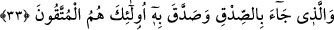
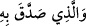
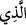

Mânâ ise şöyledir: Şüphesiz cehennem yalancı ve yalanlayan mezkur kimselerin ve
onların dışındaki kâfirlerin inkârlarının ve yalanlamalarının karşılığı olan menzil ve
makamlarıdır.
33. Doğruyu getiren ve onu tasdik edenler var ya, işte kötülükten sakınanlar
onlardır.
“Doğruyu getiren ve onu tasdik edenler var ya,” Bu kimselerden maksad, Hz.
Peygamber (a.s.) ve ona tâbi olan mü’minlerdir. Tıpkı “Andolsun biz Mûsâ’ya, belki
onlar yola gelirler diye, Kitab’ı verdik.” (el-Mü’minûn, 23/49) âyetinde olduğu gibi.
Çünkü burada kasdedilen Mûsâ (a.s.) ve kavmidir.
“İşte kötülükten sakınanlar” rağbet edilen şeylerin en yücesi olan takvâ vasfını
taşıyanlar “onlardır.” doğruyu getirmek ve onu tasdik etmekle vasfedilen kimselerdir.
İmam Süheylî (r.h.) şöyle demiştir: “Doğruyu getiren” Rasûlullah (s.a.), “onu tasdik
eden” ise Ebû Bekir Sıddîk (r.a.)’tır. Fakat O’nu tasdîk eden herkes mânâ bakımından
âyetin şümûlüne dâhildir. Bu yüzden de (çoğul olarak) “işte muttakîler/kötülükten
sakınanlar onlardır.” buyrulmuştur.”
Tefsir ehlinin söylediği gibi (Süheylî’nin söylediğinin geçerli olması için) “ buyrularak “nin açıktan söylenmesi gerekir ki bu mümkün değildir.
Allah Teâlâ “Rasûl de kendisine indirilene îman etti, mü’minler de..” (el-Bakara,
2/285) buyurduğu gibi bu âyet Hz. Peygamber (a.s.)’ın Allah katından getirdiği herşeyi
kendisinin de tasdik ve kabul ettiğine delâlet etmektedir. Buradan yola çıkan bazı
âlimler Hz. Peygamber (a.s.)’ın kendisine de gönderilmiş olduğunu söylemişlerdir.
Rasûlulah (s.a.)’in vârisi de böyledir. Çünkü o da kendi durumunun doğru olduğu ve
kendisine Allah Teâlâ’dan gelen haberi doğrulamak hususunda asla tereddüde kapılmaz.
Böylece onun hâlinin bereketi kendi vücudunun tamamına ve kendisine inanıp tasdik
edenlere feyezân eder (akar). Görmez misin ki Hz. Peygamber (a.s.) sıdkı/doğruyu
getirmiş, sıdkının berekâtından Ebû Bekir (r.a.)’a akıtmış, böylece o “Sıddîk” diye
isimlendirilmiştir. Diğer sıddîkların durumu da böyledir.
Hâfız der ki:
Sıdk ile çalış da nefesinden güneş doğsun
Subh-ı kâzibin yüzü, yalancılığından karardı
Yâni sadık ve sıddîk olan kimsenin değerli nefesinden mânevî güneş doğar ve bütün
nefisleri aydınlatır. Aynen fecr-i sâdıktan sonra sûrî güneşin doğup tüm ufukları
aydınlatması gibi. Yalancı kimsenin durumu ise böyle değildir O, tıpkı peşinden